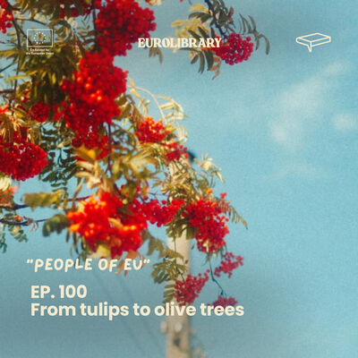
From tulips to olive trees
A story about leaving behind everything you thought defined you, only to discover that the most important thing you carry through life is yourself.
What happens when you truly listen to someone's story? Real voices, real journeys and real experiences from across Europe, told by the people who lived them. No headlines, no stereotypes. Just human stories.

The Human Library puts stories in people's mouths. This podcast carries them further. Each episode is a short personal story, from overcoming anxiety to starting over in a new country, choosing a sustainable life or finding identity through sport.
All 100 episodes. Filter by theme, search by word or let us choose for you. Press play and the episode opens right here.
Showing 100 of 100 episodes

A story about leaving behind everything you thought defined you, only to discover that the most important thing you carry through life is yourself.
A story about overcoming a hidden struggle with food and finding self-acceptance through courage and healing.
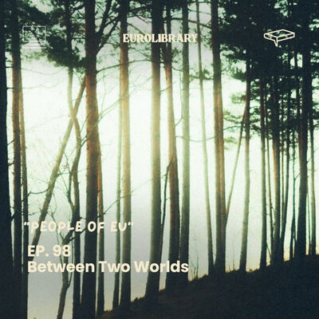
A story about growing up between countries, cultures, and identities, and learning to embrace belonging everywhere and nowhere at once.
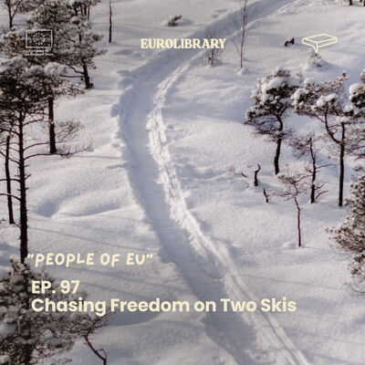
A story about a lifelong love for skiing that shapes identity, choices, and the courage to follow what truly makes you feel alive.
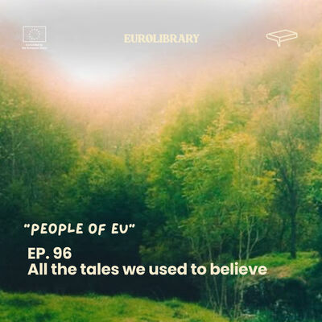
A story about how childhood compassion turned into environmental action.
A story about planting a tree and discovering that roots grow even when you leave.
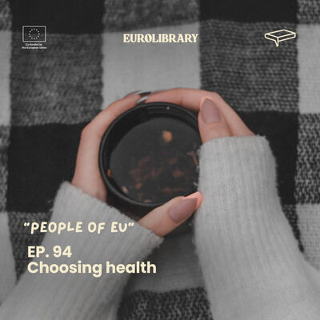
A story about body shaming, starvation, and learning that health is not punishment.
A story about turning childhood passion into purpose, and using technology to improve train travel in Bulgaria.
A story about discovering unexpected strength through running and turning a simple goal into the wild idea of crossing an entire country on foot.
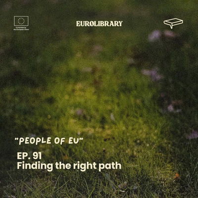
A story about bullying, emotional dependence, and learning how to stand on your own feet.
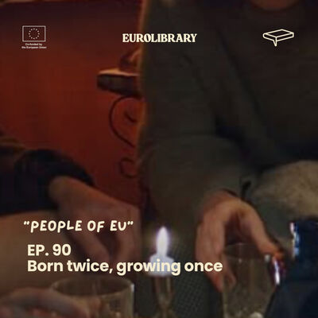
A story about war, borders, and survival journeys.
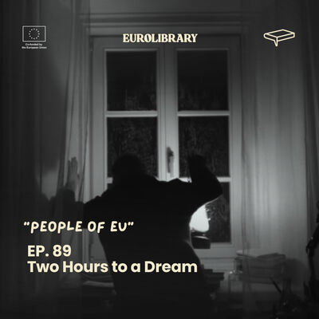
A story about a child who found freedom on a football field, and carried a dream across countries, rejections, and closed doors.
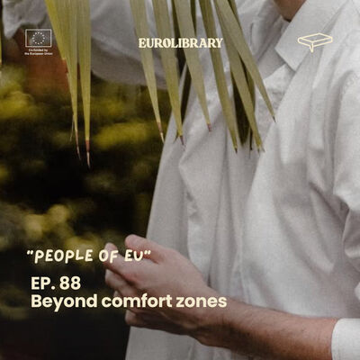
A story about body shaming, anger, and learning to feel at home in your own skin.. through work, sports, and self-expression.
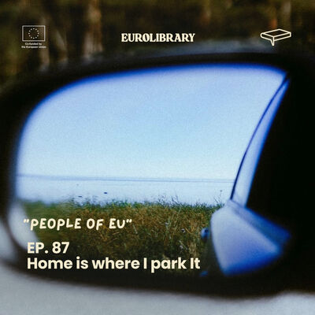
A story about choosing freedom over comfort and living in a van as a lifestyle choice.
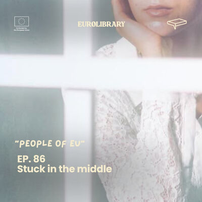
A story about growing up between cultures and never fully fitting into either.
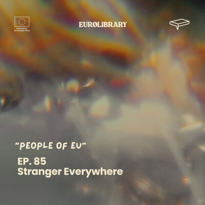
A story about anxiety, panic attacks, and learning how to breathe again.
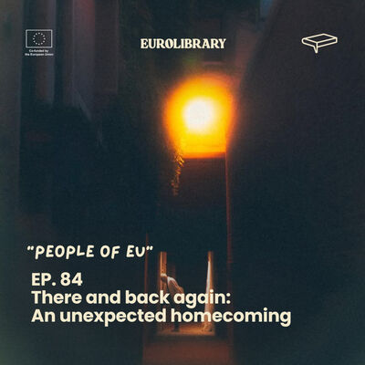
A story about chasing success abroad and realizing that coming home was the bravest and most meaningful step of all.
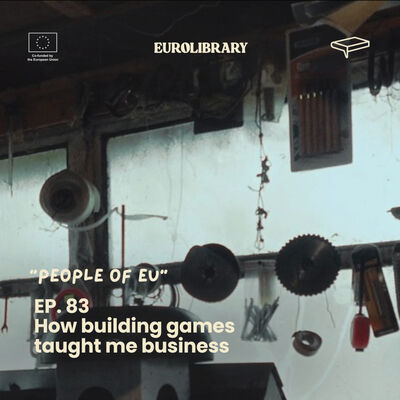
A story about approaching people without fear, learning by doing, and building opportunities through connection, experimentation, and failing fast.
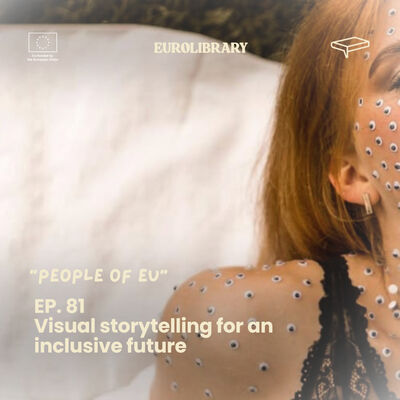
A story about growing up with stories, becoming a filmmaker, and learning how to survive as an artist by creating your own opportunities instead of waiting for them.
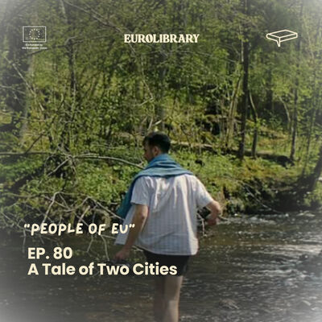
A story about a 14-year-old boy who turned YouTube marketing videos and a small-town idea into a real family income.
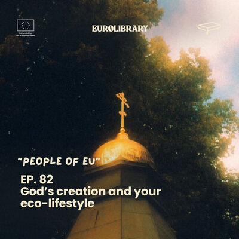
A story about faith discovered far from home.
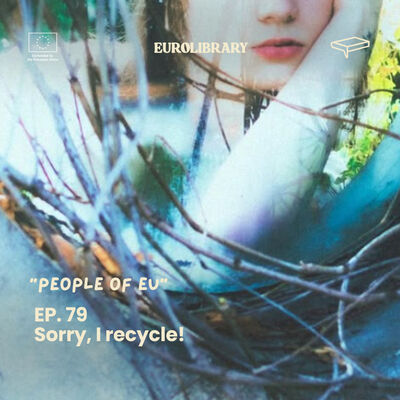
A story about eco-anger, frustration, and learning how to fight without burning out.
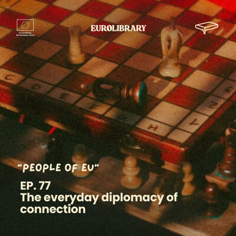
A story about turning unexpected free time during the pandemic into a digital project that supports local shops and shows how curiosity can become opportunity.
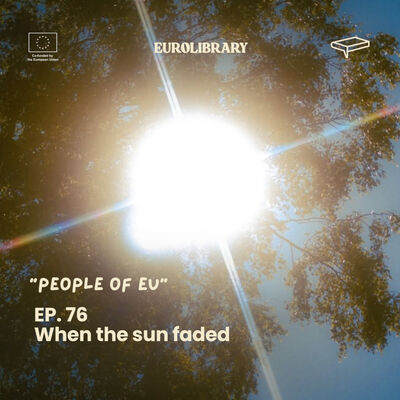
A story about growing up as “the happy one”, falling into depression, and learning that even quiet pain deserves space.
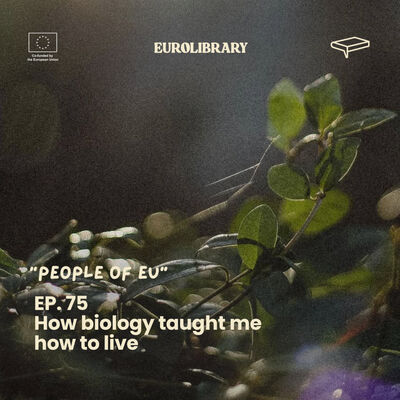
A story about being queer, bullied, and trying to survive silently.
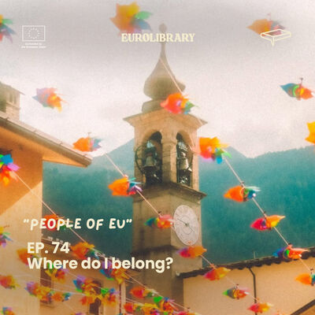
A story about searching for home across countries and realizing that belonging lives in the people you love, not the place you stand.
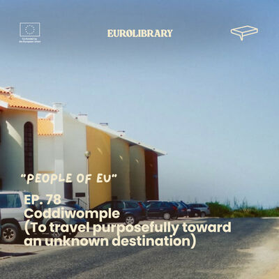
A story about leaving survival mode, asking for help, and opening a new chapter when the old environment no longer fits.
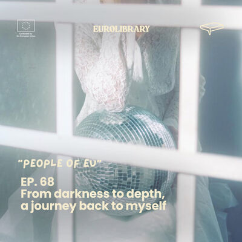
A story about being the “good child”, breaking silently, and learning that asking for help is not weakness.
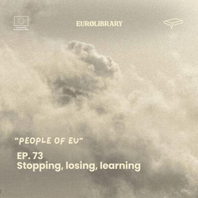
A story about stopping, losing direction, and slowly learning how to live again.
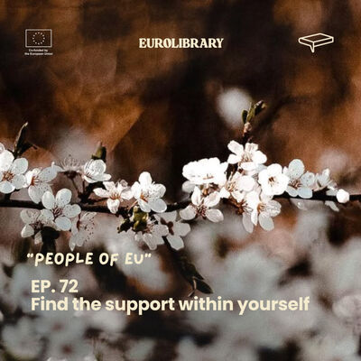
A story about being “too bossy”, burning out too young, and learning that leadership without self-care breaks you.
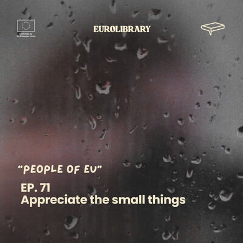
A story about going from “I’m fine” to “I need help”, and learning to feel again, step by step.
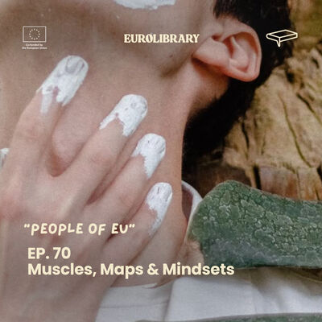
A story about feeling trapped in a stable career, discovering freedom through Erasmus and travel, and choosing an active life focused on sports, mental health, and wellbeing.
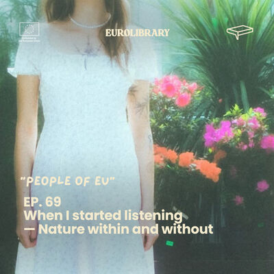
“A story about burnout, healing, and returning to your own rhythm.”
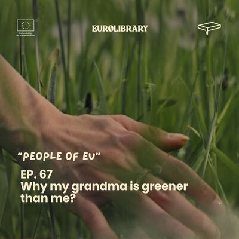
A story about learning sustainability from a grandmother
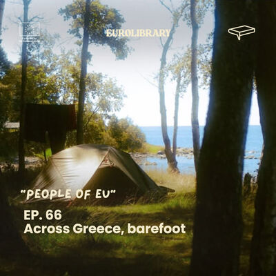
A story about building a moving community on the road.
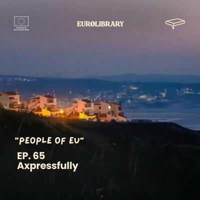
A story about growing up between mountains and cities, between cultures and identities.
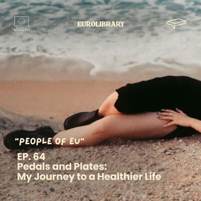
A story about redefining what “healthy” really means, beyond looks, diets, and social media advice.
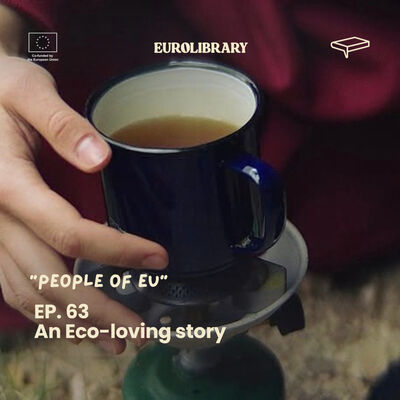
A story about how one Couchsurfing message led to vanlife and to learning that less can truly be more.
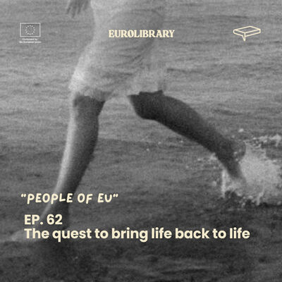
A story about searching for meaning far away from where you started.
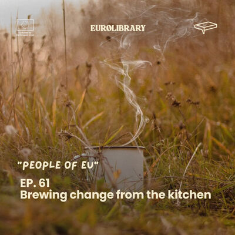
A story about how small changes can grow into something bigger.
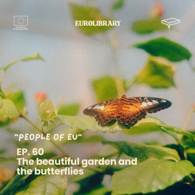
A story about chasing success, losing yourself, and learning to build your own garden, even if no one is watching.
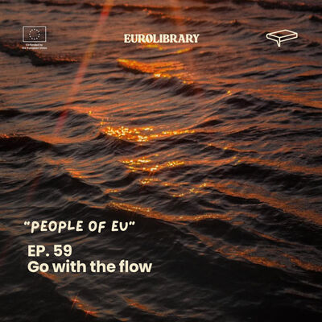
A story about stepping out of the comfort zone, living between cultures, and learning to trust the process instead of the plan.
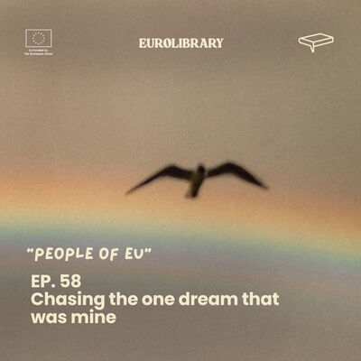
A story about living up to expectations until the body can’t take it anymore, and what happens when you finally choose your own life.
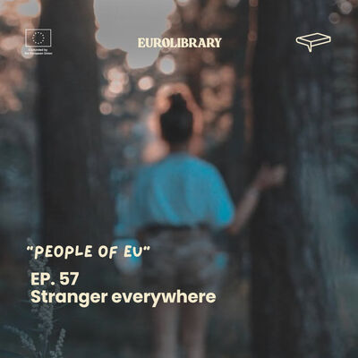
This is a story of choosing freedom over comfort, of learning independence through loss, and of living between countries, identities, and visas, never fully belonging, yet always moving forward.
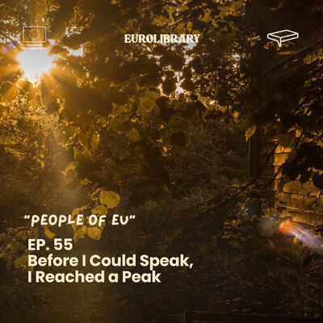
A story about losing and rediscovering the love for cycling, and learning not to quit mentally, no matter what.
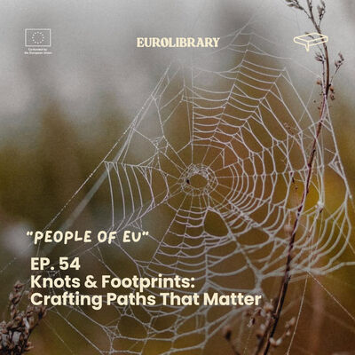
A story about overthinking less and starting more, and how small experimental ideas can slowly become something real.
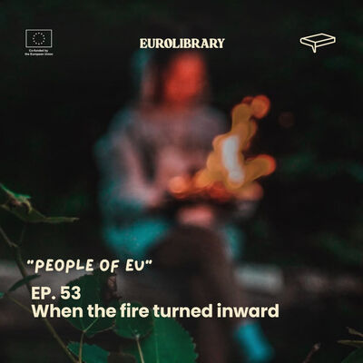
A story about learning to talk instead of hurting yourself.
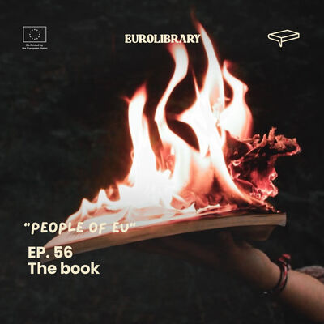
A story about daily habits, exercise, and how small changes slowly build confidence for the future.
A story about turning learning into play.
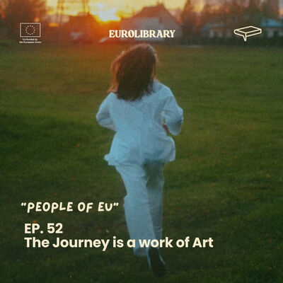
A story about questioning expectations, choosing your own path, and trying to understand who you are in a world full of predefined roles.
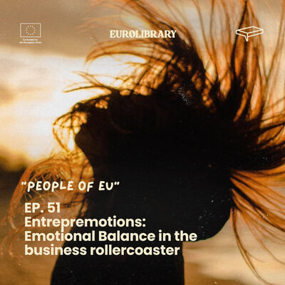
A story about choosing an unconventional path, trusting your own vision, and learning that entrepreneurship is less about ideas and more about execution and belief in yourself.
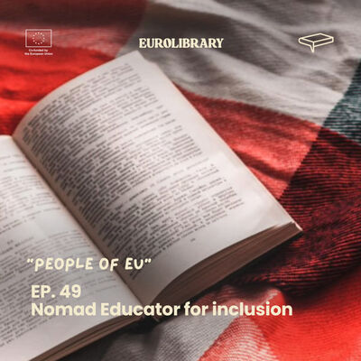
A story about bridging worlds instead of choosing sides.
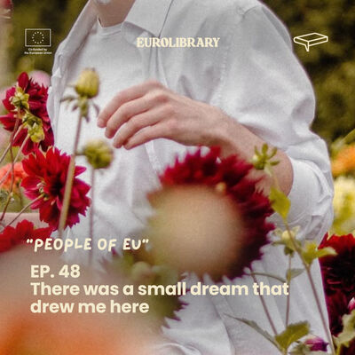
A story about leaving Nepal to work in Portugal’s fields, carrying homesickness and hope at the same time, and dreaming of one day returning with new skills, savings, and strength to build a better future back home.
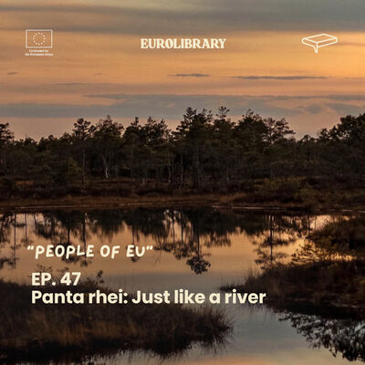
A story about turning personal love for nature into collective action.
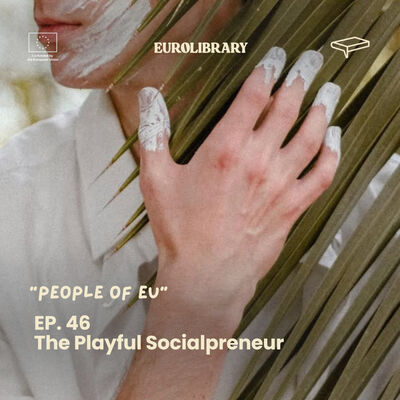
A story about moving through life on autopilot, then choosing to live intentionally by creating playful, immersive experiences that connect education, community, and purpose.
A story about growing up with limits, questioning who is “allowed” to do sports, and finding strength through movement and adventure.
A story about learning to love your body by listening to it instead of chasing impossible standards.
A story about growing up in a small family business and discovering that real growth doesn’t come from competition, but from cooperation, community, and respect for the place you live in.
A story about living in a forest with strangers, breathing, movement, and learning what it really means to be present.
A story about turning sustainability from a theory into a living experience on a small Greek island.
A story about how one simple classroom question sparked a circular economy movement.
A story about stepping out of your comfort zone and discovering a greener, kinder way of living.
A story about depression, movement, and how something as simple as walking outside slowly brought her back to herself.
A story about coming back home and feeling more lost than before.
A story about how a sports internship in Argentina turned into an NGO, unexpected journeys, and a life shaped by saying yes to opportunities far outside the comfort zone.
A story about choosing studies to please others, questioning their value, and finding meaning through movement, community, and small steps.
A story about contemporary dance as a practice of listening, where movement is not produced, but received, and the body becomes a space for intuition, presence, and experience.
A story about breaking away from expectations and rediscovering freedom, self-love, reconciliation with family, and the courage to follow your own path.
A story about ADHD, anxiety, eating disorders, and the moment a diagnosis finally made everything make sense.
A story about pushing the body to its limits, getting lost without a phone, and trusting yourself when there’s no way back.
A story about motherhood beyond the ideal image, inherited emotional pain, and the quiet work of breaking a cycle.
A story about how one simple “yes” can change a life.
A story about growing up at the edge of Europe, discovering the world through letters, and learning that borders disappear when people start listening to each other.
A story about silent workplace harassment and what it does to your mental health.
A story about growing up between countries and cultures, never fully belonging to one place
A story about trying to be “healthy” in every way and learning that balance matters more than perfection.
A story about leaving without being chased, and arriving without fully belonging.
A story about feeling out of place in a world made for specialists, and learning to accept a life driven by curiosity and many interests.
A story about growing up as a “good daughter” in a world that already decided your future.
A story about living with recurring anxiety, the fear of losing control, and the fragile line between feeling safe and feeling alone.
A story about turning a difficult childhood into a creative mission.
A story about the voice in your head that tells you “you can’t”, and what happens when you stop listening to it.
A story about growing up in sport, almost quitting, and slowly finding where you belong.
A story about leaving everything behind to be yourself, and learning what survival really means when support disappears.
A story about war and a childhood that didn’t get to finish.
A story about breaking unhealthy patterns and using a simple 14-day reset to rediscover balance, discipline, and self-care.
A story about growing up silenced by toxic masculinity, surviving mental illness, and choosing life outside society’s expectations.
A story about secretly booking a first solo trip, discovering a new way of living, and learning that success online also comes with challenges
A story about rediscovering what a real forest means, and choosing to fight for it.
A story about leaving one home and never fully finding another.
A story about growing up under extreme pressure, losing yourself to expectations, and finding the courage to choose your own path despite everything.
A raw story about loneliness, anxiety and slowly losing yourself while trying to fit in. And how one moment can change everything.
A story about discovering ecology through different cultures.
A story about growing up without a father because of migration, and learning to rebuild connection after ten years apart.
A story about survival, injustice, and rebuilding a life after a tragedy that should never have happened.
A story about softness, self-destruction, and learning too late how to be kind to yourself.
A story about losing movement, finding it again through travel, and realizing you don’t need to escape your life to feel alive.
A story about losing a parent and emotionally shutting down.
A story about addiction, depression, and choosing to change before it’s too late.
A story about slowing down in a world that rushes, and discovering that a healthy life starts with roots, not trends.
No episode matches that search. Try another word or clear the filters.
Follow People of EU on Spotify so the next story finds you, or meet the method that inspired it.